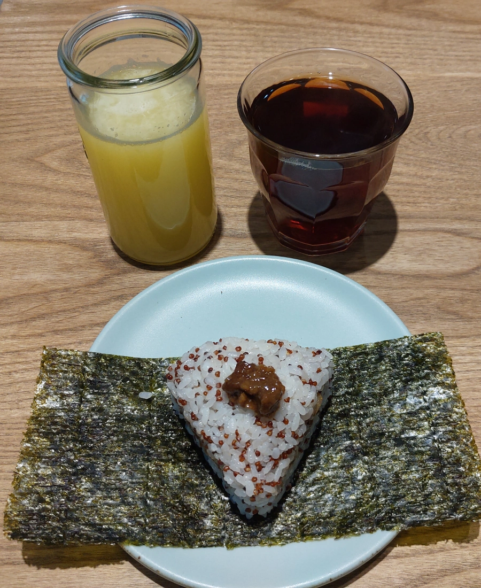

[新竹] 植美家 健康早午餐
| 餐廳名稱: | 植美家 健康早午餐 |
|---|---|
| 地 址: | 新竹市東區龍山東路218號 |
| 營業時間: | 週二~週五 7:30~14:00 |
| 週六~週日 8:00~14:00 | |
| 每週一 公休 | |
| 電 話: | 03 668 7652 |
植美家 是一間健康又好吃的早午餐，而且老闆娘很漂亮，下圖被打上薄薄馬賽克的那位，就是老闆娘，通常由她負責點單。 植美家粉絲頁的照片區有老闆娘照片啦，只是我還是得守法。
點餐台的右側，飲料、飯糰是在這裡製作，而三明治類是在後面的廚房製作。
植美家 很捨得買機器，下圖這台榨柳橙汁的機器，老闆娘曾經跟我炫耀過那是低溫榨汁，所以味道不會苦，感覺很厲害。 所以我來植美家，最常點鮮榨柳橙汁，別的早餐店，很少賣鮮榨的，頂多是濃縮還原果汁。
這台是精米器，查了一下網路，還真的有很多款家用的精米器。只買糙米，要用米的時候，可選擇研磨到什麼程度，還能大幅保留最營養的胚芽。 老闆娘真捨得，難怪飯糰的米也感覺挺新鮮的。
菜單，植美家粉絲頁的照片區 有放 2018年菜單的美工完成圖，大致上沒什麼變化。
今天飲料點了鮮榨柳橙汁大杯，及紅茶。鮮榨柳橙汁 這次沒有以前甜，可能這批柳丁就是這樣，但還是很好喝。 下方 滷肉三角飯糰，植美家 招牌之一。那個當內餡的滷肉，滷的不錯耶，鹹鹹軟爛。飯有加紅藜，煮的有點黏又不會太黏。整個很好吃。 
剝皮辣椒按摩里肌三明治，麵包 從粉絲頁照片看起來，極有可能是自製的，老闆娘有考到烘培證照，而且有出爐麵包的照片。剝皮辣椒、按摩里肌 就如同它們字面意義一樣， 跟塗醬的麵包、生菜 夾在一起，也是正常好吃。
大分柚子胡椒雞腿排三明治，各位讀者一定覺得很煩，這張照片跟前一張差在哪裡呢?
好了，請看分解圖，特別情商女王大人，把她點的大分柚子胡椒雞腿排三明治 打開看看，結構如下 -
植美家 健康早午餐 吃好幾次了，這次仍然沒讓我失望，食物的品質很穩定、很好吃， 老闆娘還是很漂亮，找不到新的早午餐可以踩雷的話，可以來 植美家 健康早午餐。